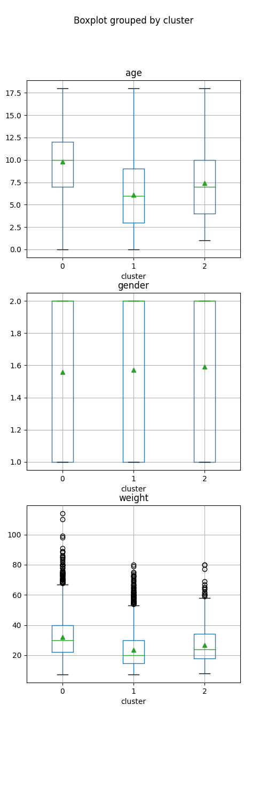

Note
Click here to download the full example code
t-SNE: Dengue dataset¶
8 9 10 11 12 13 14 15 16 17 18 19 20 21 | # Libraries
import pandas as pd
import numpy as np
from sklearn.manifold import TSNE
from sklearn.cluster import DBSCAN
from sklearn import preprocessing
import matplotlib.pyplot as plt
from pkgname.utils.data_loader import load_dengue
pd.set_option('display.max_columns', None)
SEED = 0
np.random.seed(SEED)
|
Dataset¶
Load dengue dataset. Perform forward and backwards fill after grouping by patient. Does not make use of the d001 dataset because it does not contain: abdominal_pain, bleeding_mucosal, bleeding_skin, body_temperature. To reduce computation time aggregate patient data to only have one tuple per patient.
32 33 34 35 36 37 38 39 40 41 42 43 44 45 46 47 48 49 50 51 52 53 54 55 56 57 58 59 60 61 62 63 64 | df = load_dengue(usedefault=True)
mapping = {'Female': 1, 'Male': 2, True: 1, False: 0}
df = df.replace({'gender': mapping, 'bleeding': mapping, 'shock': mapping,
'bleeding_gum': mapping, 'abdominal_pain': mapping, 'ascites': mapping,
'bleeding_mucosal': mapping, 'bleeding_skin': mapping})
features = ["date", "age", "gender", "weight", "bleeding", "plt",
"shock", "haematocrit_percent", "bleeding_gum", "abdominal_pain",
"ascites", "bleeding_mucosal", "bleeding_skin", "body_temperature"]
for feat in features:
df[feat] = df.groupby('study_no')[feat].ffill().bfill()
df = df.loc[df['age'] <= 18]
df = df.dropna()
df = df.groupby(by="study_no", dropna=False).agg(
date=pd.NamedAgg(column="date", aggfunc="last"),
age=pd.NamedAgg(column="age", aggfunc="max"),
gender=pd.NamedAgg(column="gender", aggfunc="first"),
weight=pd.NamedAgg(column="weight", aggfunc=np.mean),
bleeding=pd.NamedAgg(column="bleeding", aggfunc="max"),
plt=pd.NamedAgg(column="plt", aggfunc="max"),
shock=pd.NamedAgg(column="shock", aggfunc="max"),
haematocrit_percent=pd.NamedAgg(column="haematocrit_percent", aggfunc="max"),
bleeding_gum=pd.NamedAgg(column="bleeding_gum", aggfunc="max"),
abdominal_pain=pd.NamedAgg(column="abdominal_pain", aggfunc="max"),
ascites=pd.NamedAgg(column="ascites", aggfunc="max"),
bleeding_mucosal=pd.NamedAgg(column="bleeding_mucosal", aggfunc="max"),
bleeding_skin=pd.NamedAgg(column="bleeding_skin", aggfunc="max"),
body_temperature=pd.NamedAgg(column="body_temperature", aggfunc=np.mean),
).dropna()
|
t-SNE¶
Use t-SNE on the z-score scaled data.
72 73 74 75 76 77 78 79 80 | info = df[["date", "age", "gender", "weight"]]
data = df[["bleeding", "plt",
"shock", "haematocrit_percent", "bleeding_gum", "abdominal_pain",
"ascites", "bleeding_mucosal", "bleeding_skin", "body_temperature"]]
scaler = preprocessing.StandardScaler()
x = scaler.fit_transform(data.values)
X_embedded = TSNE(n_components=2, perplexity=500, random_state=SEED).fit_transform(x)
|
DBSCAN¶
Identify clusters using DBSCAN
88 | clustering = DBSCAN(eps=10, min_samples=5).fit(X_embedded)
|
Plotting¶
94 95 96 97 98 99 100 101 102 103 104 105 106 107 108 109 110 111 112 113 114 115 116 117 118 119 120 121 122 123 124 125 126 127 | plt.scatter(X_embedded[:,0], X_embedded[:,1], c=clustering.labels_)
plt.title('t-SNE + DBSCAN')
plt.show()
info['cluster'] = clustering.labels_
_, ax0 = plt.subplots(3, 1, figsize=(5, 15))
info.boxplot('age','cluster', ax=ax0[0])
info.boxplot('gender','cluster', ax=ax0[1])
info.boxplot('weight','cluster', ax=ax0[2])
plt.show()
stats = info.groupby(by="cluster", dropna=False).agg(
age=pd.NamedAgg(column="age", aggfunc=np.mean),
gender=pd.NamedAgg(column="gender", aggfunc=np.mean),
weight=pd.NamedAgg(column="weight", aggfunc=np.mean),
)
print(stats)
data['cluster'] = clustering.labels_
_, ax1 = plt.subplots(10, 1, figsize=(5, 50))
features = ["bleeding", "plt", "shock", "haematocrit_percent", "bleeding_gum",
"abdominal_pain", "ascites", "bleeding_mucosal", "bleeding_skin",
"body_temperature"]
for i, feat in enumerate(features):
print(feat)
data.boxplot(feat,'cluster', ax=ax1[i])
plt.show()
|

- 
Out:
/homes/oss1017/Documents/fyp/fyp2020-oss1017/examples/tsne/plot_tsne_dengue_1.py:98: SettingWithCopyWarning:
A value is trying to be set on a copy of a slice from a DataFrame.
Try using .loc[row_indexer,col_indexer] = value instead
See the caveats in the documentation: https://pandas.pydata.org/pandas-docs/stable/user_guide/indexing.html#returning-a-view-versus-a-copy
info['cluster'] = clustering.labels_
age gender weight
cluster
0 9.821014 1.559322 31.989296
1 6.119868 1.572725 23.599402
2 7.431330 1.590129 26.703076
/homes/oss1017/Documents/fyp/fyp2020-oss1017/examples/tsne/plot_tsne_dengue_1.py:115: SettingWithCopyWarning:
A value is trying to be set on a copy of a slice from a DataFrame.
Try using .loc[row_indexer,col_indexer] = value instead
See the caveats in the documentation: https://pandas.pydata.org/pandas-docs/stable/user_guide/indexing.html#returning-a-view-versus-a-copy
data['cluster'] = clustering.labels_
bleeding
plt
shock
haematocrit_percent
bleeding_gum
abdominal_pain
ascites
bleeding_mucosal
bleeding_skin
body_temperature
Total running time of the script: ( 2 minutes 21.069 seconds)